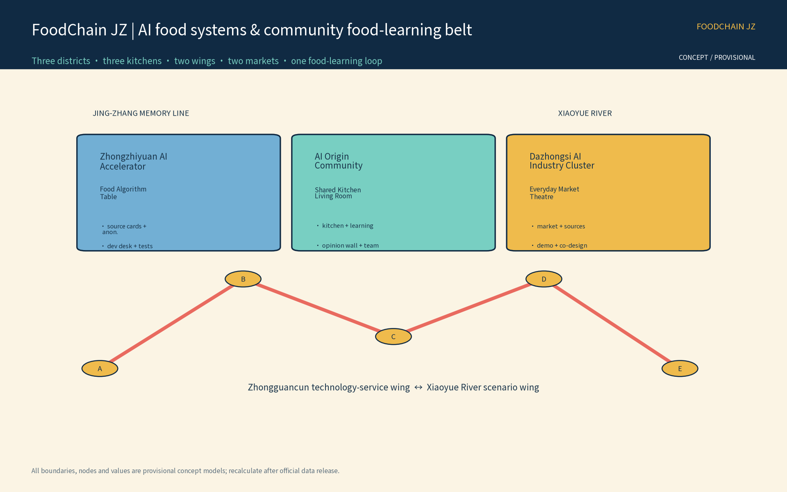
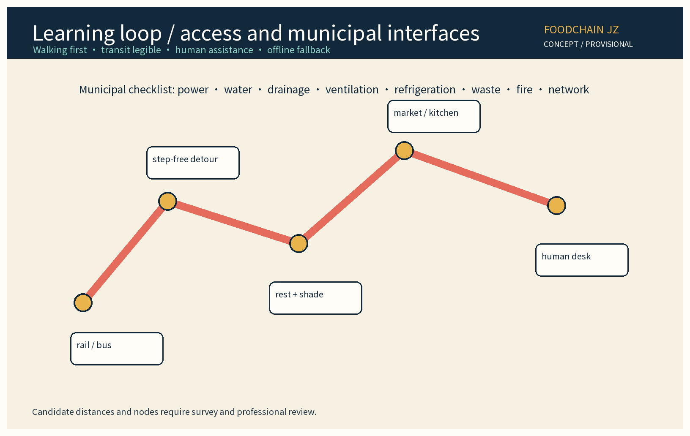
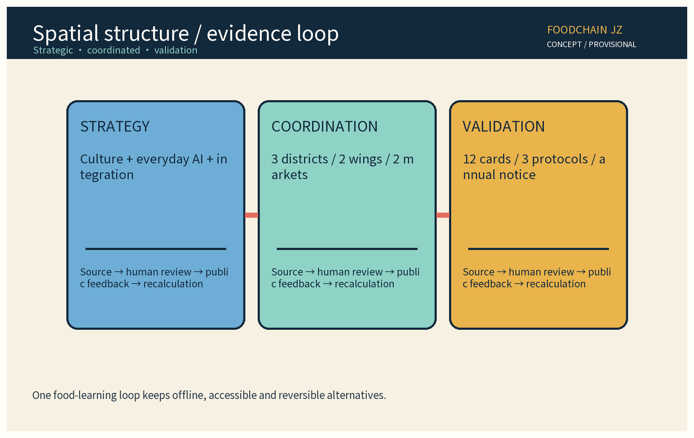
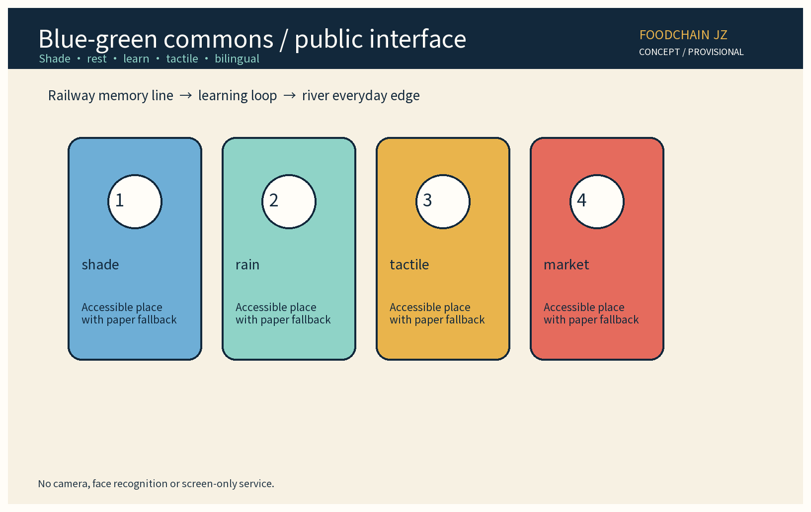

Overview map
The Centennial Jing-Zhang Cultural Belt, the Urban AI Everyday-Life Experience Belt and the AI Integration Innovation Belt become a food system: production information, shared kitchens, civic markets, food-learning events, cold-chain handover candidates and voluntary surplus redistribution become visible, human-reviewed and reversible.

Three-level scope
SITE-001 is the conceptual study boundary; KEY-ZHON / KEY-BEIJ / KEY-DAZH are three key areas. GeoJSON official_boundary=false means no red line, title, site decision or control plan.
Key areas
Food Algorithm Table, source cards, anonymous sandbox and developer table.
Shared Kitchen Living Room, food learning and opinion wall.
Everyday Market Theatre, source index and public demonstration.
Walking and transit
Walking first, cycle parking, legible transit, accessible detours, rest points, weather alternatives and a human desk; municipal interfaces need professional refinement.

Land-use zones

Blue-green public space

AI scenarios
Grain Pact: anonymous aggregation only; human review for key decisions; no excessive surveillance.
Core metrics
FAR, building height, title, permissions and official boundaries are unknown/to_verify.
Renewal projects
Near term 1-3 years starts the food-learning loop and shadow tests; mid term 3-5 years stitches nodes; long term 5-10 years deepens ecology and public operations. Each phase passes data-ready, human review, public comment and go/no-go gates.
Task coverage
| Task | Evidence |
|---|---|
| agent.1 | Name, logo, 3 positions, 5 functions, 3 districts + 2 wings, overview. |
| agent.2 | 6 traceable cases, ecosystem network, 8-factor mechanism. |
| agent.3 | 12 scenario cards, 3 protocols, 7 personas, human review. |
| agent.4 | Public-space stitching, smart-native market, 3 landmarks, component library. |
| agent.5 | Jing-Zhang narrative, food timeline, bilingual wayfinding and international communication. |
| agent.6 | Annual events, developer operations, stage gates, public day and conversion. |
All 13 review dimensions plus disabled items and boundary clauses are mapped in compliance_matrix.json → requirements_traceability.
Assumptions
Official boundaries, title, permissions, operational baselines and brand authorizations remain unknown/to_verify; concept layers need professional refinement.
Self-check status
Use the latest self_check.json, manifest and formal check outputs; local checks are not CocoSgt review.